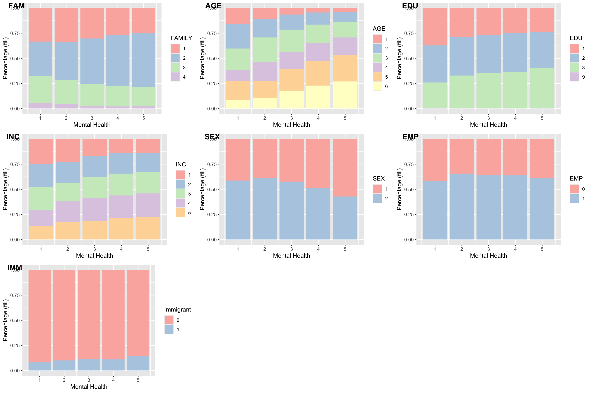
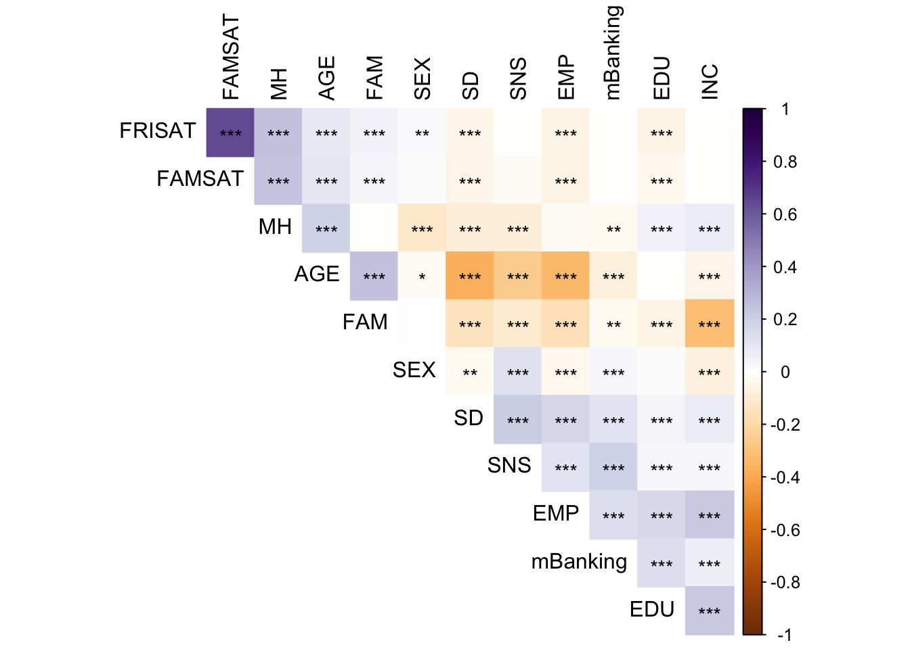
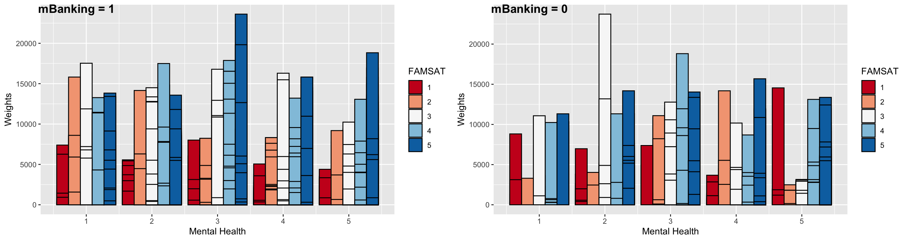
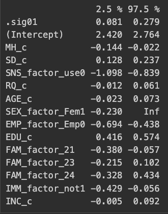

ds20 <- read_dta("data/cius2020_2022nov18_en.dta")
ds <- ds20Data Analysis - CIUS 2020
Little bit about the work I will do
Little bit about CIUS 2020
Data I need:
- Mobile banking adoption (MBANK)
- Age Group (AGE)
- Smartphone Dependent (SD)
- Income Quintile (INC)
- Friendship Satisfaction (FRISAT)
- Mental Health (MH)
- Family Relation Satisfaction (FAMSAT)
- Education Level (EDU)
- Immigration Status (IMM)
- Employment Status (EMP)
- Family Type (FAM)
- Gender (SEX)
- Social Media Use (SNS)
- Province (for grouping)
Select only those who use smartphones:
Variable Name: DV_010A
Concept: Devices used
Question Text:
During the past three months, what devices did you use to access the Internet?
Did you use:
A smartphone
ds <- ds %>%
mutate(
devSM = case_when(
dv_010a == 1 ~ 1, #yes
dv_010a == 2 ~ 0, #no
.default = -1, #any valid skip and not stated
)
)
ds <- ds %>%
filter(devSM == 1)For Mobile banking:
Variable Name: UI_050D
Concept: Activities related to other online activities
Question Text:
During the past three months, which of the following other online activities, have you done over the Internet? Have you: Conducted online banking
For Smartphone Dependency:
Variable Name: SM_030A
Concept: Frequency of use of smartphone
Question Text:
In a typical day, how often do you check your smartphone?
ds <- ds %>%
mutate(
#timeline : past 3 months
mBanking = case_when(
ui_050d == 1 ~ 1, # Yes
ui_050d == 2 ~ 0, # No
.default = -1 # valid skip, don't know, refused, not stated
),
SD = case_when(
sm_030a == 1 ~ 6, # At least every 5 minutes
sm_030a == 2 ~ 5, # At least every 15 minutes
sm_030a == 3 ~ 4, # At least every 30 minutes
sm_030a == 4 ~ 3, # One time per hour
sm_030a == 5 ~ 2, # Once a day or a few times per day
sm_030a == 6 ~ 1, # Less than one time per day
.default = 96 # Valid skip 96 , Don’t know 97 , Refusal 98, Not stated 99
)
)
ds <- ds %>% filter(SD < 10)
ds <- ds %>% filter(mBanking != -1) Friendship Satisfaction:
Variable Name: TS_010A
Concept: Satisfaction with relationships
Question Text:
In general, on a scale from 1 to 5 where 1 means «completely dissatisfied» and 5 means «completely satisfied», how satisfied are you with the relationships you have with the following people? Friends
Family Satisfaction:
Variable Name: TS_010B
Concept: Satisfaction with relationships
Question Text:
In general, on a scale from 1 to 5 where 1 means «completely dissatisfied» and 5 means «completely satisfied», how satisfied are you with the relationships you have with the following people? Relatives or family members, excluding those you live with
Mental Health:
Variable Name: FD_030A
Concept: Perceived mental health
Question Text:
In general, how is your mental health? Would you say:
ds <- ds %>% mutate(
FRISAT = case_when(
ts_010a == 1 ~ 1, #completely dissatisfied
ts_010a == 2 ~ 2,
ts_010a == 3 ~ 3,
ts_010a == 4 ~ 4,
ts_010a == 5 ~ 5, #completely satisfied
.default = 6
),
FAMSAT = case_when(
ts_010b == 1 ~ 1, #completely dissatisfied
ts_010b == 2 ~ 2,
ts_010b == 3 ~ 3,
ts_010b == 4 ~ 4,
ts_010b == 5 ~ 5, #completely satisfied
.default = 6
),
MH = case_when(
fd_030a == 1 ~ 5, #excellent
fd_030a == 2 ~ 4, #very good
fd_030a == 3 ~ 3, #good
fd_030a == 4 ~ 2, #fair
fd_030a == 5 ~ 1, #poor
.default = 6
)
)
ds <- ds %>% filter(
FRISAT < 6,
FAMSAT < 6,
MH < 6
)Social Media use:
Variable Name: UI_010C
Concept: Activities related to communication
Question Text:
During the past three months, which of the following activities, related to communication, have you done over the Internet? Have you: Used social networking websites or apps
ds <- ds %>% mutate(
id = pumfid,
province = province,
#LOC = luc_rst, #rural, urban, PE!
AGE = as.integer(age_grp),
SEX = gender,
#ABO = g_abm, #is aboriginal
#LAN = lan_g01,
EMP = ifelse(
emp == 2,
0,
emp
),
#STU = ed_g10, #is a student? --- don't include it!
EDU = g_edu,
#MINORITY = g_vismin, #is visible minority?
#DIS = dis_g10,
FAM = g_hcomp, #type of family: children under 18
IMM = ifelse(
imm_gsta == 2,
0,
imm_gsta
),
#HSIZE = g_hsize, #household size
INC = hincquin,
SNS = case_when(
ui_010c == 1 ~ 1, # yes
ui_010c == 2 ~ 0, # no
.default = 3
)
)
ds <- ds %>% filter(
SNS < 3,
EMP < 3,
FAM < 5,
IMM < 3
)ds <- ds %>%
dplyr::select(id,
mBanking, SD, FAMSAT, FRISAT, MH, SNS,
province, AGE, SEX, EMP, EDU,
FAM, IMM, INC, wtpg)Size of the dataset:
dim(ds)[1] 11176 16EXPLORING DATA
SCREENING
psych::describe(ds, type = 2) vars n mean sd median trimmed mad min
id 1 11176 108666.23 5048.86 108637.50 108660.43 6530.85 100001.0
mBanking 2 11176 0.86 0.34 1.00 0.95 0.00 0.0
SD 3 11176 3.39 1.22 3.00 3.32 1.48 1.0
FAMSAT 4 11176 4.27 0.92 5.00 4.42 0.00 1.0
FRISAT 5 11176 4.28 0.90 5.00 4.42 0.00 1.0
MH 6 11176 3.59 1.04 4.00 3.65 1.48 1.0
SNS 7 11176 0.79 0.41 1.00 0.86 0.00 0.0
province 8 11176 32.33 15.79 35.00 31.72 17.79 10.0
AGE 9 11176 3.98 1.52 4.00 4.06 1.48 1.0
SEX 10 11176 1.53 0.50 2.00 1.54 0.00 1.0
EMP 11 11176 0.63 0.48 1.00 0.67 0.00 0.0
EDU 12 11176 2.11 0.80 2.00 2.13 1.48 1.0
FAM 13 11176 1.98 0.78 2.00 1.94 1.48 1.0
IMM 14 11176 0.12 0.32 0.00 0.02 0.00 0.0
INC 15 11176 3.10 1.37 3.00 3.12 1.48 1.0
wtpg 16 11176 2054.12 2104.81 1470.54 1681.77 1375.86 18.2
max range skew kurtosis se
id 117407.00 17406.00 0.01 -1.22 47.76
mBanking 1.00 1.00 -2.12 2.51 0.00
SD 6.00 5.00 0.33 -0.70 0.01
FAMSAT 5.00 4.00 -1.30 1.47 0.01
FRISAT 5.00 4.00 -1.29 1.49 0.01
MH 5.00 4.00 -0.39 -0.44 0.01
SNS 1.00 1.00 -1.39 -0.07 0.00
province 59.00 49.00 0.16 -1.13 0.15
AGE 6.00 5.00 -0.27 -1.02 0.01
SEX 2.00 1.00 -0.11 -1.99 0.00
EMP 1.00 1.00 -0.56 -1.69 0.00
EDU 9.00 8.00 0.27 2.35 0.01
FAM 4.00 3.00 0.39 -0.37 0.01
IMM 1.00 1.00 2.35 3.52 0.00
INC 5.00 4.00 -0.08 -1.22 0.01
wtpg 23728.02 23709.82 2.67 11.27 19.91Seems like it’s kind of rare for those that use m-banking to have lower MH scores. Descriptive statistics:
ggplot(data = ds,
aes(x = SD,
y = wtpg,
color = as.factor(MH)))+
geom_point() +
geom_jitter() +
labs( x = "Smartphone Dependency",
y = "Weight",
color = "MH") +
theme_minimal() Checking Na’s:
sum(is.na(ds))[1] 0glimpse(ds)Rows: 11,176
Columns: 16
$ id <dbl> 100001, 100002, 100003, 100004, 100005, 100007, 100008, 10001…
$ mBanking <dbl> 1, 1, 1, 1, 0, 1, 1, 1, 1, 1, 0, 1, 1, 1, 1, 0, 1, 1, 1, 1, 1…
$ SD <dbl> 2, 5, 4, 2, 5, 3, 4, 3, 2, 4, 4, 5, 2, 3, 4, 6, 4, 5, 4, 4, 2…
$ FAMSAT <dbl> 4, 5, 4, 5, 5, 4, 5, 4, 4, 4, 5, 5, 5, 4, 3, 4, 4, 4, 5, 5, 4…
$ FRISAT <dbl> 4, 5, 5, 5, 5, 4, 5, 4, 4, 4, 5, 4, 4, 4, 2, 4, 4, 4, 5, 3, 4…
$ MH <dbl> 4, 3, 4, 5, 3, 3, 5, 3, 4, 2, 3, 3, 3, 4, 2, 2, 4, 3, 4, 3, 4…
$ SNS <dbl> 1, 1, 1, 0, 0, 1, 1, 0, 1, 1, 0, 1, 1, 1, 1, 1, 1, 1, 1, 1, 0…
$ province <dbl> 59, 35, 35, 24, 48, 13, 48, 12, 35, 48, 13, 12, 24, 46, 24, 2…
$ AGE <int> 6, 2, 3, 6, 4, 4, 2, 2, 2, 5, 5, 4, 2, 6, 2, 1, 6, 3, 3, 4, 5…
$ SEX <dbl> 2, 2, 2, 2, 1, 1, 1, 1, 2, 2, 2, 2, 2, 1, 2, 1, 1, 1, 1, 1, 1…
$ EMP <dbl> 0, 1, 1, 0, 0, 1, 1, 1, 0, 0, 0, 1, 1, 1, 1, 0, 0, 1, 1, 1, 1…
$ EDU <dbl> 2, 3, 3, 3, 1, 3, 2, 1, 2, 2, 2, 2, 3, 3, 3, 1, 3, 3, 2, 2, 1…
$ FAM <dbl> 2, 1, 2, 2, 3, 3, 1, 2, 1, 2, 2, 1, 3, 2, 1, 3, 3, 3, 1, 2, 2…
$ IMM <dbl> 0, 0, 0, 0, 0, 0, 0, 0, 0, 1, 0, 0, 0, 0, 0, 1, 0, 0, 0, 1, 0…
$ INC <dbl> 4, 3, 2, 4, 2, 3, 2, 5, 4, 5, 2, 5, 2, 5, 2, 3, 4, 4, 4, 4, 3…
$ wtpg <dbl> 2524.87054, 3720.74855, 5802.87880, 1449.85202, 1155.15218, 1…RELATIONSHIPS: Visualizations, Contingency, Correlations
Mental Health and Mbanking:
ggplot(data = ds, aes(x = MH, y = wtpg)) +
geom_col(
aes(fill = as.factor(mBanking)), stat = "identity", color = "black", position = position_dodge(0.9)) +
fill_palette("Pastel1") +
xlab("Mental Health") +
ylab("Frequencies") + labs(fill = "Mbanking")
MH and controls: AGE, SEX, EMP, EDU, FAM, IMM, INC
gg_fam <- ggplot(data = ds , aes(MH, fill = as.factor(FAM))) + geom_bar(position = "fill") + labs(x = "Mental Health", y = "Percentage (fill)", fill = 'FAMILY') + fill_palette("Pastel1")
gg_age <- ggplot(data = ds , aes(MH, fill = as.factor(AGE))) + geom_bar(position = "fill") + labs(x = "Mental Health", y = "Percentage (fill)", fill = 'AGE') + fill_palette("Pastel1")
gg_edu <- ggplot(data = ds , aes(MH, fill = as.factor(EDU))) + geom_bar(position = "fill") + labs(x = "Mental Health", y = "Percentage (fill)", fill = 'EDU') + fill_palette("Pastel1")
gg_inc <- ggplot(data = ds , aes(MH, fill = as.factor(INC))) + geom_bar(position = "fill") + labs(x = "Mental Health", y = "Percentage (fill)", fill = 'INC') + fill_palette("Pastel1")
gg_sex <- ggplot(data = ds , aes(MH, fill = as.factor(SEX))) + geom_bar(position = "fill") + labs(x = "Mental Health", y = "Percentage (fill)", fill = 'SEX') + fill_palette("Pastel1")
gg_emp <- ggplot(data = ds , aes(MH, fill = as.factor(EMP))) + geom_bar(position = "fill") + labs(x = "Mental Health", y = "Percentage (fill)", fill = 'EMP') + fill_palette("Pastel1")
gg_imm <- ggplot(data = ds , aes(MH, fill = as.factor(IMM))) + geom_bar(position = "fill") + labs(x = "Mental Health", y = "Percentage (fill)", fill = 'Immigrant') + fill_palette("Pastel1")
ggarrange(
gg_fam, gg_age, gg_edu, gg_inc, gg_sex, gg_emp, gg_imm,
labels = c("FAM", "AGE", "EDU", "INC", "SEX", "EMP", "IMM"),
ncol = 3,
nrow = 3
) 
MH and other variables: SD, FAMSAT, FRISAT, SNS
gg_frisat <- ggplot(data = ds , aes(MH, fill = as.factor(FRISAT))) + geom_bar(position = "fill") + labs(x = "Mental Health", y = "Percentage (fill)", fill = 'FRISAT') + fill_palette("Pastel1")
gg_famsat <- ggplot(data = ds , aes(MH, fill = as.factor(FAMSAT))) + geom_bar(position = "fill") + labs(x = "Mental Health", y = "Percentage (fill)", fill = 'FAMSAT') + fill_palette("Pastel1")
gg_sd <- ggplot(data = ds , aes(MH, fill = as.factor(SD))) + geom_bar(position = "fill") + labs(x = "Mental Health", y = "Percentage (fill)", fill = 'SD') + fill_palette("Pastel1")
gg_sns <- ggplot(data = ds , aes(MH, fill = as.factor(SNS))) + geom_bar(position = "fill") + labs(x = "Mental Health", y = "Percentage (fill)", fill = 'SNS') + fill_palette("Pastel1")
ggarrange(
gg_frisat, gg_famsat, gg_sd, gg_sns,
labels = c("FRISAT", "FAMSAT", "SD", "SNS"),
ncol = 2,
nrow = 2
) 
sle <- ds %>% dplyr::select(mBanking, SD, FAMSAT, FRISAT, SNS, AGE, SEX, EMP, EDU, FAM, INC, MH)
corM <- Hmisc::rcorr(as.matrix(sle))
reg_corM <- as.matrix(corM$r)
colnames(reg_corM) <- c("mBanking", "SD", "FAMSAT", "FRISAT", "SNS", "AGE", "SEX", "EMP", "EDU", "FAM", "INC", "MH")
#
rownames(reg_corM) <- c("mBanking", "SD", "FAMSAT", "FRISAT", "SNS", "AGE", "SEX", "EMP", "EDU", "FAM", "INC", "MH")
#
corrplot::corrplot(reg_corM, p.mat = corM$P, method = "color", type = "upper", insig = 'label_sig', sig.level = c(0.001, 0.01, 0.05), pch.cex = 0.9, order = 'AOE', tl.col = "black", tl.cex = 1, diag = F, col = corrplot::COL2('PuOr'))
FRISAT and FAMSAT are obviously highly correlated. I’ll combine them into a new variable called RS for Relationship satisfaction.
ds <- ds %>% mutate(
RS = FAMSAT + FRISAT
)Showing that it’s ok to replace FAMSAT + FRISAT with RS
Using a Likelihood Ratio Test:
model_famsatfrisat <- glm(mBanking ~ FAMSAT + FRISAT,
family = "binomial",
data = ds)
model_rs <- glm(mBanking ~ RS,
family = "binomial",
data = ds)
anova(model_rs, model_famsatfrisat, test = "Chisq") Analysis of Deviance Table
Model 1: mBanking ~ RS
Model 2: mBanking ~ FAMSAT + FRISAT
Resid. Df Resid. Dev Df Deviance Pr(>Chi)
1 11174 8890.9
2 11173 8890.9 1 0.0045091 0.9465Since p > 0.05, there is no significant loss in model performance. It’s better to keep one variable instead of two.
Some Visualizations
ggplot(data = ds, aes(x = MH, y = SD))+ geom_point(size = 1.2, alpha = .5, position = "jitter") +
geom_smooth(method = lm,
se = FALSE,
col = "red",
size = 2,
alpha = .8)+ # to add regression line
theme_minimal()ggplot(data = ds,
aes(x = MH,
y = SD,
col = as.factor(mBanking)))+ #to add the colours for different classes
geom_point(size = 1.2,
alpha = .8,
position = "jitter")+ #to add some random noise for plotting purposes
theme_minimal() + scale_color_manual(name = "MBanking",
labels = c("No", "Yes"),
values = c("red", "lightblue"))ggplot(data = ds,
aes(x = MH,
y = SD,
col = as.factor(mBanking)))+ #to add the colours for different classes
geom_point(size = 1.2,
alpha = .8,
position = "jitter")+
#scale_color_manual(name = "MBanking",
#labels = c("No", "Yes"),
#values = c("red", "lightblue")) + #+ ggnewscale::new_scale_color() +
geom_smooth(method = lm,
se = T,
size = 1.5,
linetype = 1,
alpha = .7,
) +
scale_color_manual(name = "MBanking",
labels = c("No", "Yes"),
values = c("black", "darkred")) + theme_minimal()ggplot(data = ds,
aes(x = AGE, #CHANGE THIS <<<
y = MH, #CHANGE THIS <<<
col = as.factor(mBanking)))+ #to add the colours for different classes
geom_point(size = 1.2,
alpha = .8,
position = "jitter")+
#scale_color_manual(name = "MBanking",
#labels = c("No", "Yes"),
#values = c("red", "lightblue")) + #+ ggnewscale::new_scale_color() +
geom_smooth(method = lm,
se = T,
size = 1.5,
linetype = 1,
alpha = .7,
) +
scale_color_manual(name = "MBanking",
labels = c("No", "Yes"),
values = c("black", "grey70")) + theme_minimal()ds1 <- ds %>% filter(mBanking == 1)
ds2 <- ds %>% filter(mBanking == 0)
gg5 <- ggplot(data = ds1, aes(x = MH, y = wtpg)) +
geom_col(
aes(fill = as.factor(FAMSAT)), stat = "identity", color = "black", position = position_dodge(0.9)) +
fill_palette("RdBu") +
xlab("Mental Health") +
ylab("Weights") + labs(fill = "FAMSAT")
gg6 <- ggplot(data = ds2 %>% filter(mBanking == 0), aes(x = MH, y = wtpg)) +
geom_col(
aes(fill = as.factor(FAMSAT)), stat = "identity", color = "black", position = position_dodge(0.9)) +
fill_palette("RdBu") +
xlab("Mental Health") +
ylab("Weights") + labs(fill = "FAMSAT")
ggarrange(gg5, gg6, ncol = 2, labels = c("mBanking = 1", "mBanking = 0"))
gg7 <- ggplot(data = ds1, aes(x = MH, y = wtpg)) +
geom_col(
aes(fill = as.factor(SNS)), stat = "identity", color = "black", position = position_dodge(0.9)) +
fill_palette("RdBu") +
xlab("Mental Health") +
ylab("Weights") + labs(fill = "SNS")
gg8 <- ggplot(data = ds2 %>% filter(mBanking == 0), aes(x = MH, y = wtpg)) +
geom_col(
aes(fill = as.factor(SNS)), stat = "identity", color = "black", position = position_dodge(0.9)) +
fill_palette("RdBu") +
xlab("Mental Health") +
ylab("Weights") + labs(fill = "SNS")
ggarrange(gg7, gg8, ncol = 2, labels = c("mBanking = 1", "mBanking = 0"))gg9 <- ggplot(data = ds1, aes(x = MH, y = wtpg)) +
geom_col(
aes(fill = as.factor(SD)), stat = "identity", color = "black", position = position_dodge(0.9)) +
fill_palette("RdBu") +
xlab("Mental Health") +
ylab("Weights") + labs(fill = "SD")
gg10 <- ggplot(data = ds2 %>% filter(mBanking == 0), aes(x = MH, y = wtpg)) +
geom_col(
aes(fill = as.factor(SD)), stat = "identity", color = "black", position = position_dodge(0.9)) +
fill_palette("RdBu") +
xlab("Mental Health") +
ylab("Weights") + labs(fill = "SD")
ggarrange(gg9, gg10, ncol = 2, labels = c("mBanking = 1", "mBanking = 0"))
Modeling
Preparing the data for modeling:
ds <- ds %>% mutate(
MH_c = MH - mean(MH),
SD_c = SD - mean(SD),
SNS_f = as.factor(SNS),
RS_c = RS - mean(RS),
AGE_c = AGE - mean(AGE),
SEX_f = as.factor(SEX),
EMP_f = as.factor(EMP),
EDU_c = EDU - mean(EDU),
FAM_f = as.factor(FAM),
INC_c = INC - mean(INC),
IMM_f = as.factor(IMM),
PRVNC = as.factor(province)
)
ds <- ds %>%
mutate(
# SEX
SEX_factor_Fem = relevel(SEX_f, ref = '2'),
SEX_factor_Mal = relevel(SEX_f, ref = '1'),
# EMP
EMP_factor_not = relevel(EMP_f, ref = '0'),
EMP_factor_Emp = relevel(EMP_f, ref = '1'),
# FAM
FAM_factor_1 = relevel(FAM_f, ref = '1'),
FAM_factor_2 = relevel(FAM_f, ref = '2'),
FAM_factor_3 = relevel(FAM_f, ref = '3'),
FAM_factor_4 = relevel(FAM_f, ref = '4'),
# IMM
IMM_factor_Imm = relevel(IMM_f, ref = '1'),
IMM_factor_non = relevel(IMM_f, ref = '0'),
# SNS
SNS_factor_notuse = relevel(SNS_f, ref = '0'),
SNS_factor_use = relevel(SNS_f, ref = '1')
)So, I believe there may be some variation due to the sampling method (clusters on provinces).
ds <- ds %>%
mutate(
province_f_coded = fct_recode(
PRVNC,
'NL' = '10',
'NS' = '12',
'NB' = '13',
'QC' = '24',
'ON' = '35',
'MB' = '46',
'SK' = '47',
'AB' = '48',
'BC' = '59'
)
)ggplot(ds, aes(province_f_coded, mBanking, color = as.factor(MH))) +
stat_summary(fun = mean, geom = "point") +
stat_summary(fun.data = mean_cl_boot, geom = "errorbar", width = 0.4) +
theme_set(theme_bw(base_size = 10)) +
theme(legend.position = "top") +
labs(x = "Province", y = "Observed Probabilty of mobile banking", color = "MH") + theme_minimal()prov_ <- c('NL', 'NS', 'NB', 'QC', 'ON', 'MB', 'SK', 'AB', 'BC')
prov_n <- c(10, 12, 13, 24, 35, 46, 47, 48, 59)
# random effects are from model 2
ranefs_ <- c(-0.029445800, 0.001523515,-0.034782017, 0.308732844,-0.132427568,-0.129533645,-0.047807245,-0.001728474,0.053000416)
ranefs_ <- round(ranefs_, 4)
d_graph <- cbind(prov_, prov_n, ranefs_)
d_graph <- as.data.frame(d_graph)
provs_fullnames <- c('Newfoundland and Labrador', 'Nova Scotia', 'New Brunswick','Quebec', 'Ontario', 'Manitoba', 'Saskatchewan', 'Alberta', 'British Columbia')ggplot(data = d_graph, aes(x = prov_n, y = ranefs_, label = c('NL', 'NS', 'NB', 'QC', 'ON', 'MB', 'SK', 'AB', 'BC'))) +
geom_point(size = 2, alpha = .5) +
geom_text(check_overlap = TRUE) +
labs(
x = "Province Code",
y = "Random Effect",
fill = "Province"
) + geom_label(aes(fill = provs_fullnames), colour = "white", fontface = "bold") + geom_line(linetype = "dashed") +
scale_color_manual(values = provs_fullnames, name = "province")Following the paper, I have these models:
- Model 1. Standard Logistic Regression with RS \begin{equation*} \begin{split} & \ln\frac{P(Y = 1)}{1 - P(Y = 1)} = \ \beta_0 + \beta_{1} \ MH + \ \beta_2 \ SD + \ \beta_3 \ SNS + \ \beta_4 \ AGE \ + \ \beta_5 \ SEX \\ & + \ \beta_6 \ EMP \ + \ \beta_7 \ EDU + \ \beta_8 \ INC \ + \ \beta_9 \ D_{FAM_1} + \ \beta_{10} \ D_{FAM_3}\\ & + \ \beta_{11} \ D_{FAM_4} \ + \ \beta_{12} \ IMM + \ \beta_{13} \ RS + \ \epsilon \\ \end{split} \end{equation*}
model1 <- glm(
mBanking ~ MH_c + SD_c + SNS_factor_use + RS_c + AGE_c + SEX_factor_Fem + EMP_factor_Emp + EDU_c + FAM_factor_2 + IMM_factor_non + INC_c,
data = ds,
family = "binomial"
)- Model 2. Fixed Effect Logistic Regression \begin{equation*} \begin{split} & \ln\frac{P(Y = 1)}{1 - P(Y = 1)} = \\ & \ \gamma_{0,j} + u_{0,j} + \beta_{1} \ MH + \ \beta_2 \ SD + \ \beta_3 \ SNS + \ \beta_4 \ AGE \ + \ \beta_5 \ SEX\\ & + \ \beta_6 \ EMP \ + \ \beta_7 \ EDU + \ \beta_8 \ INC \ + \ \beta_9 \ D_{FAM_1} + \ \beta_{10} \ D_{FAM_3}\\ & + \ \beta_{11} \ D_{FAM_4} \ + \ \beta_{12} \ IMM + \ \beta_{13} \ RS + \ \epsilon \\ \end{split} \end{equation*}
model2 <- glmer(
mBanking ~ MH_c + SD_c + SNS_factor_use + RS_c + AGE_c + SEX_factor_Fem + EMP_factor_Emp + EDU_c + FAM_factor_2 + IMM_factor_non + INC_c + (1 | province),
data = ds,
family = binomial(),
control = glmerControl(optimizer = "bobyqa")
)- Model 3. Random Effect Logistic Regression
\begin{equation*} \begin{split} & \ln\frac{P(Y = 1)}{1 - P(Y = 1)} = \\ & \ \gamma_{0,0} + u_{0,j} + (\gamma_{1,0} + u_{1,j}) \ MH + \ (\gamma_{2,0} + u_{2,j}) \ SD \ + \ (\gamma_{3,0} + u_{3,j}) \ SNS \\ & + \ (\gamma_{4,0} + u_{4,j}) \ AGE \ + \ (\gamma_{5,0} + u_{5,j}) \ SEX \ + \ (\gamma_{6,0} + u_{6,j}) EMP \\ & + \ (\gamma_{7,0} + u_{7,j}) \ EDU \ + \ (\gamma_{8,0} + u_{8,j}) \ INC \ + \ (\gamma_{9,0} + u_{9,j}) \ D_{FAM_1} \\ & + \ (\gamma_{10,0} + u_{10,j}) \ D_{FAM_3} \ + \ (\gamma_{11,0} + u_{11,j}) \ D_{FAM_4} \\ & + \ (\gamma_{12,0} + u_{12,j}) \ IMM_1 \ + \ (\gamma_{13,0} + u_{13,j}) \ RS + \ \epsilon \\ \end{split} \end{equation*}
model3 <- glmer(
mBanking ~ MH_c + SD_c + SNS_factor_use + RS_c + AGE_c + SEX_factor_Fem + EMP_factor_Emp + EDU_c + FAM_factor_2 + IMM_factor_non + INC_c +
(1 + MH_c + SD_c + SNS + RS_c + AGE_c + SEX_f + EMP + EDU_c + FAM_2 + IMM_n +
INC_c | province),
data = ds,
family = binomial(link = "logit"),
control = glmerControl(optimizer = "bobyqa"))For faster speeds, I’ll test everything with this model (random):
model4 <- glmer(
mBanking ~ MH_c + SD_c + SNS_factor_use + RS_c + AGE_c + SEX_factor_Fem + EMP_factor_Emp + EDU_c + FAM_factor_2 + IMM_factor_non + INC_c +
(1 + MH_c + SD_c + SNS_factor_use + RS_c | province),
data = ds,
family = binomial(link = "logit"),
control = glmerControl(optimizer = "bobyqa"))Comparing models:
- Likelihood Ratio Test
model1vsmodel2 - If
model2wins, we need the Hausman test to see ifmodel3is better - If
model1wins, we should just use that
test_performance(model1, model2)Name | Model | BF | df | df_diff | Chi2 | p
----------------------------------------------------------
model1 | glm | | 14 | | |
model2 | glmerMod | 333.29 | 15 | 1.00 | 20.94 | < .001
Models were detected as nested (in terms of fixed parameters) and are compared in sequential order.Hausman test for fixed effects in R is a bit tricky, so, I did it manually following the formula:
- Extract per-group (province) coefficients for both models and convert them to data frames
coefs_fixed <- coef(model2)
coefs_rando <- coef(model4)
coefs_fixed_df <- as.data.frame(coefs_fixed$province)
coefs_rando_df <- as.data.frame(coefs_rando$province)- Subtract Random Effects model coefficients from Fixed Effect model, per province. This gives you the core term of the Hausman test:
coefs_diff <- coefs_fixed_df - coefs_rando_df
coef_diffs_matrix <- as.matrix(coefs_diff)- Estimate the difference in the variance-covariance matrices of the coefficient estimates.
V_diff <- as.matrix(vcov(model2) - vcov(model4))What I need is:
H = (\hat{\beta_{F}} - \hat{\beta_{R}}) \cdot V^{-1} \cdot (\hat{\beta_{F}} - \hat{\beta_{R}})^T
Just checking that the matrix multiplications make sense:
dim(t(coef_diffs_matrix))[1] 14 10dim(solve(V_diff))[1] 14 14dim(coef_diffs_matrix)[1] 10 14They do! So, calculate H:
H <- coef_diffs_matrix %*% solve(V_diff) %*% t(coef_diffs_matrix)
H 10 11 12 13 24 35
10 -0.9216314 -1.14821418 -0.62853586 -1.27216633 -0.9614259 -1.1000217
11 -1.1482142 0.06629823 -1.36003254 -0.52961709 1.1793393 -1.5173996
12 -0.6285359 -1.36003254 -1.82447922 0.04347552 -3.1847200 0.4852484
13 -1.2721663 -0.52961709 0.04347552 -2.20670478 2.2638636 -2.8475033
24 -0.9614259 1.17933926 -3.18472004 2.26386362 -1.8142023 1.1087512
35 -1.1000217 -1.51739956 0.48524845 -2.84750329 1.1087512 -2.7374940
46 -0.5906471 -2.26035734 -1.59868327 -1.09977349 -1.5358419 -0.7031878
47 -0.3433758 -2.20315977 -2.31495024 0.30606569 -4.8434098 1.2976268
48 -0.6326137 -1.46623618 -1.50959981 -0.17644778 -3.4875978 0.4707913
59 -0.6693772 -0.92849590 -2.53030848 0.56902412 -2.1646448 0.4002808
46 47 48 59
10 -0.5906471 -0.3433758 -0.6326137 -0.6693772
11 -2.2603573 -2.2031598 -1.4662362 -0.9284959
12 -1.5986833 -2.3149502 -1.5095998 -2.5303085
13 -1.0997735 0.3060657 -0.1764478 0.5690241
24 -1.5358419 -4.8434098 -3.4875978 -2.1646448
35 -0.7031878 1.2976268 0.4707913 0.4002808
46 -4.4001880 -2.6590794 -0.7335810 -3.5244974
47 -2.6590794 -3.1458358 -1.5682187 -4.0309963
48 -0.7335810 -1.5682187 -1.2939189 -2.0536598
59 -3.5244974 -4.0309963 -2.0536598 -3.4398903This is the actual critical \chi^2 value at degrees of freedom 13 (for 14 covariates), in fact, I can check:
qr(V_diff)$rank[1] 14chisq_critical <- qchisq(p = .05, df = 13, lower.tail = FALSE)
chisq_critical[1] 22.36203If H1 > \chi^2 then reject the null hypothesis that says the fixed model is better.
H > chisq_critical #reject H0: the fixed model is better. 10 11 12 13 24 35 46 47 48 59
10 FALSE FALSE FALSE FALSE FALSE FALSE FALSE FALSE FALSE FALSE
11 FALSE FALSE FALSE FALSE FALSE FALSE FALSE FALSE FALSE FALSE
12 FALSE FALSE FALSE FALSE FALSE FALSE FALSE FALSE FALSE FALSE
13 FALSE FALSE FALSE FALSE FALSE FALSE FALSE FALSE FALSE FALSE
24 FALSE FALSE FALSE FALSE FALSE FALSE FALSE FALSE FALSE FALSE
35 FALSE FALSE FALSE FALSE FALSE FALSE FALSE FALSE FALSE FALSE
46 FALSE FALSE FALSE FALSE FALSE FALSE FALSE FALSE FALSE FALSE
47 FALSE FALSE FALSE FALSE FALSE FALSE FALSE FALSE FALSE FALSE
48 FALSE FALSE FALSE FALSE FALSE FALSE FALSE FALSE FALSE FALSE
59 FALSE FALSE FALSE FALSE FALSE FALSE FALSE FALSE FALSE FALSEThe p-value:
pchisq(H, df = 13, lower.tail = FALSE) 10 11 12 13 24 35 46 47 48 59
10 1 1.0000000 1 1.0000000 1.0000000 1.0000000 1 1.0000000 1 1.0000000
11 1 1.0000000 1 1.0000000 0.9999896 1.0000000 1 1.0000000 1 1.0000000
12 1 1.0000000 1 1.0000000 1.0000000 1.0000000 1 1.0000000 1 1.0000000
13 1 1.0000000 1 1.0000000 0.9995475 1.0000000 1 1.0000000 1 0.9999999
24 1 0.9999896 1 0.9995475 1.0000000 0.9999928 1 1.0000000 1 1.0000000
35 1 1.0000000 1 1.0000000 0.9999928 1.0000000 1 0.9999816 1 1.0000000
46 1 1.0000000 1 1.0000000 1.0000000 1.0000000 1 1.0000000 1 1.0000000
47 1 1.0000000 1 1.0000000 1.0000000 0.9999816 1 1.0000000 1 1.0000000
48 1 1.0000000 1 1.0000000 1.0000000 1.0000000 1 1.0000000 1 1.0000000
59 1 1.0000000 1 0.9999999 1.0000000 1.0000000 1 1.0000000 1 1.0000000Ok, we can’t reject this hypothesis - therefore, the fixed model is better. Another way to check:
anova(model2, model4)Data: ds
Models:
model2: mBanking ~ MH_c + SD_c + SNS_factor_use + RS_c + AGE_c + SEX_factor_Fem + EMP_factor_Emp + EDU_c + FAM_factor_2 + IMM_factor_non + INC_c + (1 | province)
model4: mBanking ~ MH_c + SD_c + SNS_factor_use + RS_c + AGE_c + SEX_factor_Fem + EMP_factor_Emp + EDU_c + FAM_factor_2 + IMM_factor_non + INC_c + (1 + MH_c + SD_c + SNS_factor_use + RS_c | province)
npar AIC BIC logLik deviance Chisq Df Pr(>Chisq)
model2 15 8176.0 8285.8 -4073.0 8146.0
model4 29 8202.8 8415.1 -4072.4 8144.8 1.2569 14 1Ok, best model is model2. Now adding interaction terms:
model2_int <- glmer(
mBanking ~ MH_c + SD_c + SNS_factor_use + RS_c + AGE_c + SEX_factor_Fem
+ EMP_factor_Emp + EDU_c + FAM_factor_2 + IMM_factor_non + INC_c
+ MH_c:RS_c + MH_c:SD_c + MH_c:SNS_factor_use
+ (1 | province),
data = ds,
family = binomial(),
control = glmerControl(optimizer = "bobyqa"))Printing both odds ratios and log-odds versions:
summ(
model2,
scale = F,
pvals = T,
exp = T,
digits = 3,
#part.corr = T, #Print partial (labeled "partial.r") and semipartial (labeled "part.r")
#confint = getOption("summ-confint", FALSE),
#ci.width = getOption("summ-ci.width", 0.95),
#vifs = T
)| Observations | 11176 |
| Dependent variable | mBanking |
| Type | Mixed effects generalized linear model |
| Family | binomial |
| Link | logit |
| AIC | 8176.019 |
| BIC | 8285.842 |
| Pseudo-R² (fixed effects) | 0.143 |
| Pseudo-R² (total) | 0.148 |
| exp(Est.) | S.E. | z val. | p | |
|---|---|---|---|---|
| (Intercept) | 13.580 | 0.081 | 32.201 | 0.000 |
| MH_c | 0.920 | 0.030 | -2.753 | 0.006 |
| SD_c | 1.195 | 0.027 | 6.622 | 0.000 |
| SNS_factor_use0 | 0.377 | 0.064 | -15.308 | 0.000 |
| RS_c | 1.020 | 0.018 | 1.084 | 0.279 |
| AGE_c | 1.026 | 0.024 | 1.084 | 0.278 |
| SEX_factor_Fem1 | 0.893 | 0.059 | -1.924 | 0.054 |
| EMP_factor_Emp0 | 0.557 | 0.063 | -9.313 | 0.000 |
| EDU_c | 1.570 | 0.039 | 11.661 | 0.000 |
| FAM_factor_21 | 0.786 | 0.079 | -3.031 | 0.002 |
| FAM_factor_23 | 0.947 | 0.078 | -0.702 | 0.483 |
| FAM_factor_24 | 1.006 | 0.186 | 0.034 | 0.973 |
| IMM_factor_non1 | 0.810 | 0.094 | -2.256 | 0.024 |
| INC_c | 1.050 | 0.024 | 2.013 | 0.044 |
| Group | Parameter | Std. Dev. |
|---|---|---|
| province | (Intercept) | 0.142 |
| Group | # groups | ICC |
|---|---|---|
| province | 10 | 0.006 |
summary(model2)Generalized linear mixed model fit by maximum likelihood (Laplace
Approximation) [glmerMod]
Family: binomial ( logit )
Formula:
mBanking ~ MH_c + SD_c + SNS_factor_use + RS_c + AGE_c + SEX_factor_Fem +
EMP_factor_Emp + EDU_c + FAM_factor_2 + IMM_factor_non +
INC_c + (1 | province)
Data: ds
Control: glmerControl(optimizer = "bobyqa")
AIC BIC logLik deviance df.resid
8176.0 8285.8 -4073.0 8146.0 11161
Scaled residuals:
Min 1Q Median 3Q Max
-16.2213 0.2326 0.3067 0.4159 1.1380
Random effects:
Groups Name Variance Std.Dev.
province (Intercept) 0.02003 0.1415
Number of obs: 11176, groups: province, 10
Fixed effects:
Estimate Std. Error z value Pr(>|z|)
(Intercept) 2.608591 0.081009 32.201 < 2e-16 ***
MH_c -0.082966 0.030135 -2.753 0.00590 **
SD_c 0.178056 0.026889 6.622 3.54e-11 ***
SNS_factor_use0 -0.974642 0.063671 -15.308 < 2e-16 ***
RS_c 0.019430 0.017930 1.084 0.27852
AGE_c 0.025561 0.023579 1.084 0.27834
SEX_factor_Fem1 -0.113372 0.058935 -1.924 0.05439 .
EMP_factor_Emp0 -0.586068 0.062928 -9.313 < 2e-16 ***
EDU_c 0.450903 0.038666 11.661 < 2e-16 ***
FAM_factor_21 -0.240512 0.079361 -3.031 0.00244 **
FAM_factor_23 -0.054847 0.078169 -0.702 0.48290
FAM_factor_24 0.006349 0.186493 0.034 0.97284
IMM_factor_non1 -0.210966 0.093525 -2.256 0.02409 *
INC_c 0.048330 0.024007 2.013 0.04410 *
---
Signif. codes: 0 '***' 0.001 '**' 0.01 '*' 0.05 '.' 0.1 ' ' 1summ(
model2_int,
scale = F,
pvals = T,
exp = T,
digits = 3,
#part.corr = T, #Print partial (labeled "partial.r") and semipartial (labeled "part.r")
#confint = getOption("summ-confint", FALSE),
#ci.width = getOption("summ-ci.width", 0.95),
#vifs = T
)| Observations | 11176 |
| Dependent variable | mBanking |
| Type | Mixed effects generalized linear model |
| Family | binomial |
| Link | logit |
| AIC | 8178.438 |
| BIC | 8310.225 |
| Pseudo-R² (fixed effects) | 0.144 |
| Pseudo-R² (total) | 0.149 |
| exp(Est.) | S.E. | z val. | p | |
|---|---|---|---|---|
| (Intercept) | 13.584 | 0.081 | 32.058 | 0.000 |
| MH_c | 0.888 | 0.036 | -3.246 | 0.001 |
| SD_c | 1.193 | 0.027 | 6.560 | 0.000 |
| SNS_factor_use0 | 0.372 | 0.064 | -15.449 | 0.000 |
| RS_c | 1.020 | 0.018 | 1.081 | 0.279 |
| AGE_c | 1.026 | 0.024 | 1.104 | 0.269 |
| SEX_factor_Fem1 | 0.894 | 0.059 | -1.900 | 0.057 |
| EMP_factor_Emp0 | 0.556 | 0.063 | -9.305 | 0.000 |
| EDU_c | 1.570 | 0.039 | 11.667 | 0.000 |
| FAM_factor_21 | 0.787 | 0.079 | -3.023 | 0.003 |
| FAM_factor_23 | 0.948 | 0.078 | -0.688 | 0.491 |
| FAM_factor_24 | 1.003 | 0.187 | 0.017 | 0.987 |
| IMM_factor_non1 | 0.812 | 0.094 | -2.228 | 0.026 |
| INC_c | 1.049 | 0.024 | 2.011 | 0.044 |
| MH_c:RS_c | 1.002 | 0.016 | 0.116 | 0.908 |
| MH_c:SD_c | 1.016 | 0.023 | 0.685 | 0.493 |
| MH_c:SNS_factor_use0 | 1.121 | 0.061 | 1.874 | 0.061 |
| Group | Parameter | Std. Dev. |
|---|---|---|
| province | (Intercept) | 0.142 |
| Group | # groups | ICC |
|---|---|---|
| province | 10 | 0.006 |
summary(model2_int)Generalized linear mixed model fit by maximum likelihood (Laplace
Approximation) [glmerMod]
Family: binomial ( logit )
Formula:
mBanking ~ MH_c + SD_c + SNS_factor_use + RS_c + AGE_c + SEX_factor_Fem +
EMP_factor_Emp + EDU_c + FAM_factor_2 + IMM_factor_non +
INC_c + MH_c:RS_c + MH_c:SD_c + MH_c:SNS_factor_use + (1 | province)
Data: ds
Control: glmerControl(optimizer = "bobyqa")
AIC BIC logLik deviance df.resid
8178.4 8310.2 -4071.2 8142.4 11158
Scaled residuals:
Min 1Q Median 3Q Max
-16.1594 0.2314 0.3066 0.4157 1.1163
Random effects:
Groups Name Variance Std.Dev.
province (Intercept) 0.0201 0.1418
Number of obs: 11176, groups: province, 10
Fixed effects:
Estimate Std. Error z value Pr(>|z|)
(Intercept) 2.608913 0.081381 32.058 < 2e-16 ***
MH_c -0.118271 0.036438 -3.246 0.00117 **
SD_c 0.176551 0.026915 6.560 5.39e-11 ***
SNS_factor_use0 -0.989512 0.064050 -15.449 < 2e-16 ***
RS_c 0.019530 0.018059 1.081 0.27950
AGE_c 0.026100 0.023634 1.104 0.26944
SEX_factor_Fem1 -0.112071 0.058973 -1.900 0.05738 .
EMP_factor_Emp0 -0.586152 0.062994 -9.305 < 2e-16 ***
EDU_c 0.451151 0.038668 11.667 < 2e-16 ***
FAM_factor_21 -0.240028 0.079401 -3.023 0.00250 **
FAM_factor_23 -0.053828 0.078218 -0.688 0.49134
FAM_factor_24 0.003118 0.186707 0.017 0.98668
IMM_factor_non1 -0.208543 0.093581 -2.228 0.02585 *
INC_c 0.048288 0.024016 2.011 0.04436 *
MH_c:RS_c 0.001805 0.015611 0.116 0.90795
MH_c:SD_c 0.016050 0.023429 0.685 0.49332
MH_c:SNS_factor_use0 0.114107 0.060903 1.874 0.06099 .
---
Signif. codes: 0 '***' 0.001 '**' 0.01 '*' 0.05 '.' 0.1 ' ' 1Also calculating the confidence interval for the variances of each model:
round(confint(model2),3)
And the random effects for provinces (for visualization):
ranef(model2)$province
(Intercept)
10 -0.035824280
11 0.075928582
12 -0.001101379
13 -0.034281082
24 0.287969394
35 -0.133822629
46 -0.139594708
47 -0.060600346
48 -0.012451359
59 0.040405663
with conditional variances for "province" Marginal Effects
First, let’s see which model is better:
anova(model2, model2_int)Data: ds
Models:
model2: mBanking ~ MH_c + SD_c + SNS_factor_use + RS_c + AGE_c + SEX_factor_Fem + EMP_factor_Emp + EDU_c + FAM_factor_2 + IMM_factor_non + INC_c + (1 | province)
model2_int: mBanking ~ MH_c + SD_c + SNS_factor_use + RS_c + AGE_c + SEX_factor_Fem + EMP_factor_Emp + EDU_c + FAM_factor_2 + IMM_factor_non + INC_c + MH_c:RS_c + MH_c:SD_c + MH_c:SNS_factor_use + (1 | province)
npar AIC BIC logLik deviance Chisq Df Pr(>Chisq)
model2 15 8176.0 8285.8 -4073.0 8146.0
model2_int 18 8178.4 8310.2 -4071.2 8142.4 3.5812 3 0.3104test_performance(model2, model2_int)Name | Model | BF | df | df_diff | Chi2 | p
-------------------------------------------------------------
model2 | glmerMod | | 15 | | |
model2_int | glmerMod | < 0.001 | 18 | 3.00 | 3.58 | 0.310
Models were detected as nested (in terms of fixed parameters) and are compared in sequential order.print(predict_response(model2,
terms = c("MH_c", "province"), margin = "empirical"),
n = Inf)Average predicted probabilities of mBanking
province: 10
MH_c | Predicted | 95% CI
-2.59 | 0.88 | 0.86, 0.90 -1.59 | 0.87 | 0.86, 0.89 -0.59 | 0.86 | 0.85, 0.88 0.41 | 0.85 | 0.84, 0.87 1.41 | 0.84 | 0.83, 0.86
province: 12
MH_c | Predicted | 95% CI
-2.59 | 0.89 | 0.87, 0.90 -1.59 | 0.88 | 0.86, 0.89 -0.59 | 0.87 | 0.86, 0.88 0.41 | 0.86 | 0.85, 0.87 1.41 | 0.85 | 0.83, 0.87
province: 13
MH_c | Predicted | 95% CI
-2.59 | 0.88 | 0.86, 0.90 -1.59 | 0.87 | 0.85, 0.89 -0.59 | 0.86 | 0.85, 0.88 0.41 | 0.85 | 0.84, 0.87 1.41 | 0.84 | 0.82, 0.86
province: 24
MH_c | Predicted | 95% CI
-2.59 | 0.91 | 0.90, 0.93 -1.59 | 0.90 | 0.89, 0.92 -0.59 | 0.90 | 0.89, 0.91 0.41 | 0.89 | 0.88, 0.90 1.41 | 0.88 | 0.87, 0.90
province: 35
MH_c | Predicted | 95% CI
-2.59 | 0.87 | 0.85, 0.89 -1.59 | 0.86 | 0.84, 0.88 -0.59 | 0.85 | 0.84, 0.87 0.41 | 0.84 | 0.83, 0.86 1.41 | 0.83 | 0.81, 0.85
province: 46
MH_c | Predicted | 95% CI
-2.59 | 0.87 | 0.85, 0.89 -1.59 | 0.86 | 0.85, 0.88 -0.59 | 0.85 | 0.84, 0.87 0.41 | 0.84 | 0.83, 0.86 1.41 | 0.83 | 0.82, 0.85
province: 47
MH_c | Predicted | 95% CI
-2.59 | 0.88 | 0.86, 0.90 -1.59 | 0.87 | 0.85, 0.89 -0.59 | 0.86 | 0.85, 0.88 0.41 | 0.85 | 0.84, 0.87 1.41 | 0.84 | 0.82, 0.86
province: 48
MH_c | Predicted | 95% CI
-2.59 | 0.88 | 0.86, 0.90 -1.59 | 0.88 | 0.86, 0.89 -0.59 | 0.87 | 0.85, 0.88 0.41 | 0.86 | 0.84, 0.87 1.41 | 0.85 | 0.83, 0.87
province: 59
MH_c | Predicted | 95% CI
-2.59 | 0.89 | 0.87, 0.91 -1.59 | 0.88 | 0.87, 0.90 -0.59 | 0.87 | 0.86, 0.89 0.41 | 0.86 | 0.85, 0.88 1.41 | 0.85 | 0.84, 0.87
Margins at different provinces:
head(margins_summary(model2,
at = list(province = c(10, 12, 13, 24, 35, 46, 47, 48, 59)))) factor province AME SE z p lower upper
AGE_c 10.0000 0.0029 0.0027 1.0837 0.2785 -0.0023 0.0081
AGE_c 12.0000 0.0028 0.0026 1.0837 0.2785 -0.0023 0.0079
AGE_c 13.0000 0.0029 0.0027 1.0837 0.2785 -0.0023 0.0081
AGE_c 24.0000 0.0023 0.0021 1.0835 0.2786 -0.0019 0.0065
AGE_c 35.0000 0.0031 0.0028 1.0838 0.2784 -0.0025 0.0086
AGE_c 46.0000 0.0031 0.0028 1.0838 0.2784 -0.0025 0.0086Summary Table of Margins:
margins_summary(model2) factor AME SE z p lower upper
AGE_c 0.0028 0.0026 1.0838 0.2785 -0.0022 0.0078
EDU_c 0.0490 0.0044 11.1029 0.0000 0.0403 0.0576
EMP_factor_Emp0 -0.0663 0.0076 -8.6816 0.0000 -0.0813 -0.0513
FAM_factor_21 -0.0269 0.0091 -2.9500 0.0032 -0.0447 -0.0090
FAM_factor_23 -0.0058 0.0083 -0.6964 0.4862 -0.0220 0.0105
FAM_factor_24 0.0007 0.0192 0.0341 0.9728 -0.0370 0.0383
IMM_factor_non1 -0.0241 0.0113 -2.1415 0.0322 -0.0462 -0.0020
INC_c 0.0053 0.0026 2.0105 0.0444 0.0001 0.0104
MH_c -0.0090 0.0033 -2.7429 0.0061 -0.0155 -0.0026
RS_c 0.0021 0.0020 1.0827 0.2790 -0.0017 0.0059
SD_c 0.0193 0.0030 6.5080 0.0000 0.0135 0.0252
SEX_factor_Fem1 -0.0123 0.0064 -1.9175 0.0552 -0.0250 0.0003
SNS_factor_use0 -0.1254 0.0100 -12.5093 0.0000 -0.1450 -0.1057